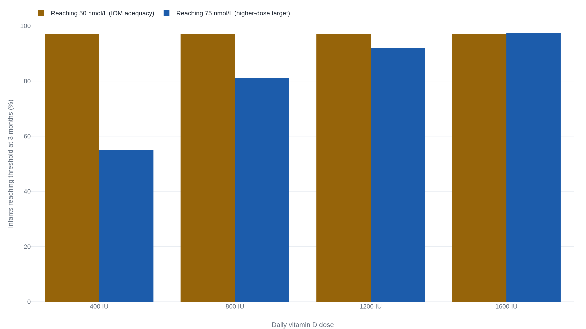

Higher vitamin D doses gave breastfed infants more in the blood and no more in the bone
The standard 400 IU drops do the one thing physiology makes plain and the trials can barely count, keeping a breastfed baby out of deficiency, while the case for giving more comes down to where the line for “enough” is set.
What the milk leaves out
The baby this desk follows was born in February. At six months she is still on the breast, and still, every morning, on a dropper of vitamin D. The reason is not in the baby. It is in the milk. A lactating mother taking the standard 400 IU/day of vitamin D produces milk that carries under 25 to 78 IU/L of it, far below what an infant needs.1 For comparison, infant formula sold in the United States must contain at least 400 IU/L, and a baby would have to drink close to a liter of it a day to reach 400 IU that way.1 A breastfed baby drinks nothing of the kind.
Human milk is not defective here. The vitamin was never meant to travel through it. Skin makes vitamin D from ultraviolet light, and for most of the species' history a nursing infant got enough sun on enough skin to cover the gap milk leaves. Modern infants are kept out of direct sun on purpose, and a body that evolved to synthesize the vitamin outdoors now sits mostly indoors. The gap that used to close itself no longer does. That is why the recommendation exists at all. The American Academy of Pediatrics calls for 400 IU/day beginning in the first few days of life, a figure it raised from 200 IU in 2008. The Institute of Medicine adopted the same 400 IU as the infant Adequate Intake.12
The case the drops actually carry
What the 400 IU buys, precisely, is a blood level. The number the guidance cares about is serum 25-hydroxyvitamin D, or 25(OH)D, the circulating form labs measure to read vitamin D status. The Institute of Medicine judged 20 ng/mL, equal to 50 nmol/L, the level needed for good bone health “for practically all individuals.”2 The old 200 IU/day held an infant's 25(OH)D above 27.5 nmol/L but not above 50; 400 IU/day holds it above 50. That is the entire arithmetic behind the 2008 increase.1
A blood level is a surrogate, not the disease. The disease is nutritional rickets: soft, deforming bone from too little vitamin D to mineralize it, real and preventable, the outcome the whole enterprise exists to stop. An international expert panel reviewing the global evidence in 2016 called rickets and vitamin D deficiency “preventable” public health problems and, independently of the AAP, put the infant floor at 400 IU/day.3 The historical warrant is older still: a teaspoon of cod liver oil, roughly 400 IU, both prevented and treated rickets across a fifty-year safety record the AAP leaned on when it set the dose.1
The strong-sounding claim rests on thinner trial evidence than its confidence suggests. The Cochrane review of infant vitamin D pooled 19 randomized trials in 2,837 mother-infant pairs. Supplementation at 400 IU/day raises 25(OH)D and reduces insufficiency, at low certainty. But the evidence was insufficient to judge the effect on deficiency itself or on bone health.4 The reason is not neglect. It is that the disease has become uncommon enough that trials rarely catch a case: across all 19 trials, only two reported biochemical rickets at all.4 The deficiency-prevention case, in other words, is strong in physiology, in consensus, and in a fifty-year cod-liver-oil safety record. It leans on 25(OH)D as a stand-in precisely because the hard endpoint is now too rare for a trial to size. That is a case built on why rather than on a randomized count.
Where more stops helping
Around that narrow claim sits a broader one: if 400 IU prevents deficiency, more should do more, and vitamin D should reach beyond bone into infection, allergy, and the developing brain. Every place that broader claim has been put to a randomized trial, it has come back at the standard dose's level.
Start with dose. Gallo and colleagues randomized 132 healthy, term, breastfed infants in Montreal at one month to 400, 800, 1200, or 1600 IU/day. All four doses put 25(OH)D at or above 50 nmol/L in 97% of the infants by three months. Only 1600 IU/day pushed it to 75 nmol/L or more in nearly every infant, 97.5% against 55% on 400 IU, 81% on 800, and 92% on 1200. Growth and bone mineral content did not differ by dose.5 The same Montreal team measured those children again at age three. The ones who had received 800, 1200, or 1600 IU in infancy showed no advantage in 25(OH)D or in spine or whole-body bone over the 400 IU group: “Dosages higher than 400 IU/day do not appear to provide additional benefits to the bone at follow-up.”6

The larger, better-powered test agreed. The Finnish VIDI trial randomized 975 term infants in Helsinki, at 60 degrees north, to 400 or 1200 IU/day from two weeks through 24 months; 95.7% were vitamin D sufficient already at birth. The higher dose did raise 25(OH)D, by about 12.5 ng/mL on average at 24 months. It bought nothing with the increase: no gain in bone strength on quantitative CT, and no reduction in parent-reported infections across the first two years.7 The trial's neurodevelopmental arm assessed 801 of the children on the Ages and Stages Questionnaire. The difference between 1200 and 400 IU on the total score was 1.17 points at 12 months (95% CI −0.06 to 2.38) and 0.48 points at 24 months (95% CI −0.40 to 1.36): a gap straddling zero.8 Allergy failed the same way in its own trial. Rueter and colleagues gave 195 infants at hereditary allergy risk, all vitamin D sufficient at birth, either 400 IU/day or placebo for six months, then followed them to age two and a half. Eczema, IgE-mediated food allergy, wheeze and asthma, and allergic sensitization all came out without a significant difference between the drops and the placebo.9
| Endpoint | Best evidence | What it shows |
|---|---|---|
| 25(OH)D status | RCTs of dose (Gallo; Cochrane pooled) | 400 IU/day reliably holds serum 25(OH)D above 50 nmol/L. |
| Rickets | Physiology and consensus; RCT base thin (2 of 19 trials) | Preventable, but now too rare for the trials to size directly. |
| Later bone | RCT hard endpoint (Gallo age 3; VIDI pQCT) | No advantage from any dose above 400 IU through age 3. |
| Respiratory infection | RCT (VIDI, 1200 vs 400 IU) | No reduction in infections across the first two years. |
| Allergy | RCT vs placebo (Rueter) | No reduction in eczema, food allergy, wheeze, or sensitization. |
| Neurodevelopment | RCT (VIDI, Tuovinen) | No difference on the Ages and Stages score at 12 or 24 months. |
What counts as “enough”
If every larger dose lands at the standard dose's level on every hard outcome, what keeps the higher-dose argument alive? A single number. The IOM set bone adequacy at 20 ng/mL, or 50 nmol/L. It warned in the same report that the count of people labeled deficient is probably inflated, because laboratories flag results against cut-points higher than the committee found the evidence to support.2 Higher-dose advocates aim instead at 75 nmol/L, or 30 ng/mL. That is the line Gallo's arms were built around, and, as Fig. 1 shows, the only line that separates the doses at all. The case for giving an infant more vitamin D is not a claim that a measured outcome improves. It is a claim that the target should move from 50 to 75.
The guidance's own authors concede the target is open. The AAP's 2008 report states outright that “consensus has not been reached with regard to the concentration of 25-OH-D to define vitamin D insufficiency for infants and children.”1 Two facts close the argument the higher target opens. The one dose that reaches 75 nmol/L in nearly all infants, 1600 IU/day, sits above the IOM's tolerable upper limit of 1,000 IU/day for infants under six months.2 And the belief that a higher level must help ran the other way as the evidence grew. The AAP in 2008 floated roles for vitamin D in immunity, diabetes, and cancer as a “potential” the data “may eventually” confirm. The IOM then reviewed more than a thousand studies across exactly those conditions and judged the non-skeletal evidence “mixed and inconclusive” and not reliable. “Higher levels,” the committee wrote, “have not been shown to confer greater benefits.”2 More study narrowed the claim rather than widening it.
One randomized result cuts against the null, and it is worth reading exactly, because it reinforces the narrow case rather than the broad one. In the D-Wheeze trial, Hibbs and colleagues randomized 300 Black infants born preterm, at 28 to 36 weeks. One arm got sustained 400 IU/day. The other followed a diet-limited strategy that withheld the supplement once formula or fortifier supplied 200 IU. Recurrent wheezing by 12 months' adjusted age fell to 31.1% on sustained supplementation from 41.8% on the diet-limited arm, a relative risk of 0.66 (95% CI 0.47 to 0.94).10
D-Wheeze compared supplementing against largely withholding, in infants born preterm and at high risk of deficiency, on a soft respiratory endpoint. It is evidence for keeping an at-risk baby supplied, not evidence that vitamin D prevents wheeze in a healthy, term, breastfed infant, and not a case for a dose above 400 IU. Read beside VIDI, which found no infection benefit from a higher dose in already-sufficient infants, the two results agree: the benefit lives in preventing deficiency, not in pushing past it.710
There is even a route that raises an infant's level without an infant dropper: the AAP recorded pilot data in which giving the mother up to 6,400 IU/day raised her breastfed infant's 25(OH)D about as much as giving the infant 300 to 400 IU directly. The academy declined to recommend it universally pending larger safety trials, so the drops remain the standing route.1
Back to the dropper
For the six-month-old on the breast, the decision is unchanged and the reasoning under it is now specific. Keep giving the 400 IU/day. The reason is deficiency prevention, grounded in how little vitamin D her milk carries and in the 50 nmol/L her drops hold her above. It is not a general boost to her bones, her lungs, her immune system, or her development, none of which a higher dose has been shown to move. The AAP's current parent-facing guidance says the same as its 2008 report: 400 IU/day up to age one, unless a baby is drinking more than about 27 ounces a day of fortified formula.11
Because the drops work by holding a blood level across months, what matters is the habit, not any single morning; a missed day is not a missed treatment of a disease, only a small gap in a running average.
Give a breastfed infant 400 IU/day of vitamin D. The case for it is strong and narrow: it prevents deficiency and the rickets deficiency causes, on the strength of milk content, the 50 nmol/L surrogate, and a fifty-year safety record, rather than a large trial counting rickets. Every larger dose and every broader benefit put to a randomized trial has come back at the standard dose's level. What would change this: a trial showing 75 nmol/L buys a hard outcome 50 does not, or a randomized base large enough to size the rickets claim itself.24
Four situations sit outside this general answer and belong with a pediatrician: a suspected deficiency, a baby with darker skin or living at a low-sun latitude where the skin makes less vitamin D, a baby born preterm, and any question about the right dose. Those are individual calls a clinician makes with a blood test and the whole child in front of them. This desk reads the research; it does not stand in for that visit.
Sources
- American Academy of Pediatrics (Wagner & Greer) · Prevention of Rickets and Vitamin D Deficiency in Infants, Children, and Adolescents (Pediatrics, 2008)
- Institute of Medicine · Dietary Reference Intakes for Calcium and Vitamin D, Report Brief (2010/2011)
- Munns et al. · Global Consensus Recommendations on Prevention and Management of Nutritional Rickets (Horm Res Paediatr, 2016)
- Cochrane Database of Systematic Reviews (Tan et al.) · Vitamin D supplementation for term breastfed infants (2020)
- Gallo et al. · Effect of Different Dosages of Oral Vitamin D Supplementation on Vitamin D Status in Healthy, Breastfed Infants (JAMA, 2013)
- Gallo, Weiler et al. · Vitamin D supplementation in early infancy and bone mineral density at 3 years (Osteoporosis International, 2016)
- Rosendahl et al. (VIDI) · Effect of Higher vs Standard Dosage of Vitamin D3 Supplementation on Bone Strength and Infection in Infants (JAMA Pediatrics, 2018)
- Tuovinen et al. (VIDI) · Vitamin D Supplementation and Child Neurodevelopment (JAMA Network Open, 2021)
- Rueter et al. · Direct Infant Vitamin D Supplementation and Allergic Disease (Nutrients, 2020)
- Hibbs et al. (D-Wheeze) · Effect of Vitamin D Supplementation on Recurrent Wheezing in Black Infants Born Preterm (JAMA, 2018)
- American Academy of Pediatrics · HealthyChildren.org: Vitamin D & Iron Supplements for Babies (updated 2022)